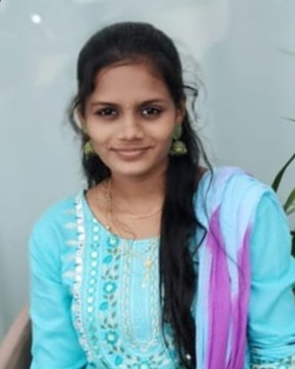

Ganti Padma Priya

Contact Info
LinkedIn Id : https://www.linkedin.com/in/padma-priya-ganti
Github Id : https://github.com/Priya0841
CodeChef Id : https://www.codechef.com/users/priyas26
GFG Id : https://www.geeksforgeeks.org/user/priyas206dpz/
Hackerrank Id : https://www.hackerrank.com/profile/priyas20061996
OBJECTIVE
A driven 2nd-year B.Tech Computer Science student seeking an internship opportunity to apply my skills in software development, data structures, and algorithms.
I aim to contribute to innovative projects and gain valuable industry experience in a dynamic environment.
EDUCATION
- University College of Engineering, JNTUK, Kakinada 2023-2027
B.Tech, Computer Science & Engineering
Relevant Coursework:
Dealing with Advanced Data Structures, OOP with Java, Computer Organization,
Discrete Mathematics, Web Development
SKILLS
- Programming Languages: C, Java(Basic), Python (Basic)
- Data Structures & Algorithms: Strong understanding of fundamental algorithms and data structures, problem-solving on platforms like GeeksforGeeks and LeetCode.
- Web Development: HTML
- Soft Skills: Teamwork, Communication, Problem-solving
CERTIFICATIONS
- edx verified certificate for Computer Science 101 - edx.com
- edx verified certificate for Advanced ChatGpt - edx.com
- Certified Leadership Development - FLY Program CMI(Competitiveness Mindness Institute)
ACHIEVEMENTS
- Reliance Foundation Undergraduate Scholar - 2023
- 4-Star Coder on HackerRank in Java & C
- Won many gold medals in Karate & Essay writing
EXTRA CURRICULAR ACTIVITIES
- Member of National Service Scheme(NSS)
- Kho - Kho Player & Taekwondo Practitioner